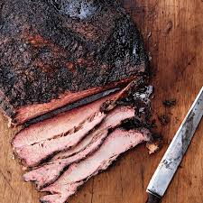

Brisket

Description
Juicy, tender smoked brisket with a simple DIY seasoning.
Ingredients
- 1 12-14 pound whole packer brisket
- 2 Tablespoons coarse Kosher salt
- 2 Tablespoons coarse ground black pepper
- 2 Tablespoons garlic powder
Steps
- Store your brisket in the refrigerator until you are ready to start trimming. Cold briskets are much easier to work with.
Flip your brisket over so the point end is underneath. Remove any silver skin or excess fat from the flat muscle.
Trim down the large crescent moon shaped fat section until it is a smooth transition between the point and the flat. Trim
and excessive or loose meat and fat from the point. Square the edges and ends of the flat. Flip the brisket over and trim
the top fat cap to about 1/4 of an inch thickness across the surface of the brisket.
- In a mixing bowl or empty spice container, mix the salt, pepper, and garlic. Share over the brisket to evenly distribute the spices on all sides.
- Preheat your smoker to 225 degrees F using indirect heat and hardwood smoke. Place the brisket on the smoker with the point end facing your main
heat source. This is a thicker part of the brisket and it can handle the additional heat. Close the lid and smoke until an internal thermometer
reads 165 degrees F (usually takes around 8 hours).
- On a large work surface, roll out a big piece of butcher paper (or foil) and center your brisket in the middle. Wrap the brisket by folding edge
over edge, creating a leak proof seal all the way around. Return the wrapped brisket to the smoker, seam side down so the weight from the brisket
crimps the edges of the paper wrap down tight.
- On a large work surface, roll out a big piece of butcher paper (or foil) and center your brisket in the middle. Wrap the brisket by folding edge
over edge, creating a leak proof seal all the way around. Return the wrapped brisket to the smoker, seam side down so the weight from the brisket
crimps the edges of the paper wrap down tight.
- Remove the brisket to a large cutting board and allow to rest for 1 hour before slicing. Slice both the point and the flat against the grain with
a sharp knife and serve immediately.
Links